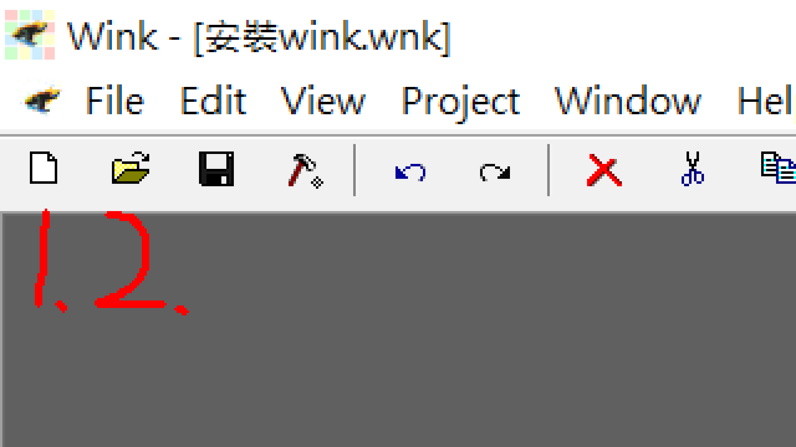
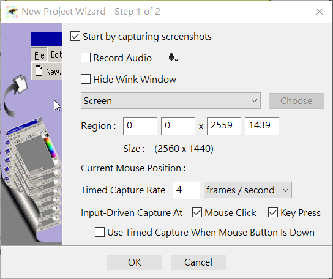
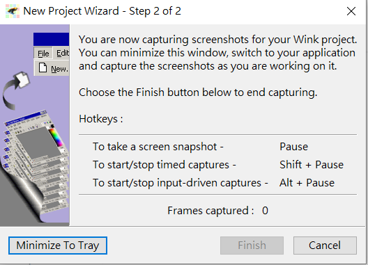
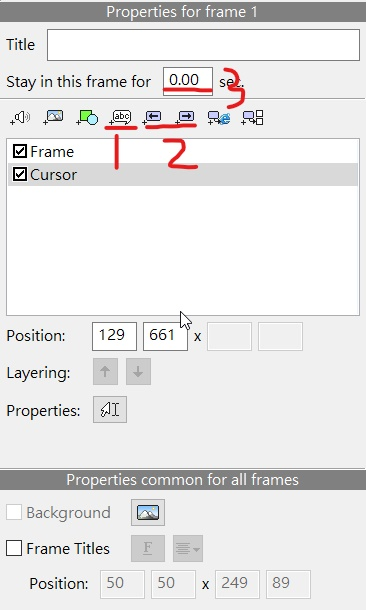
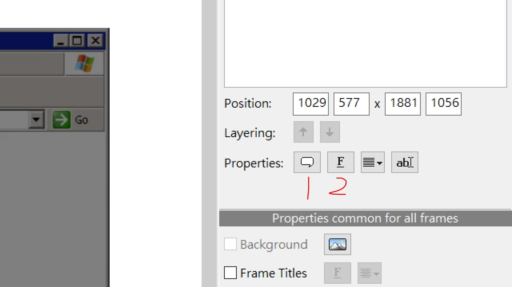
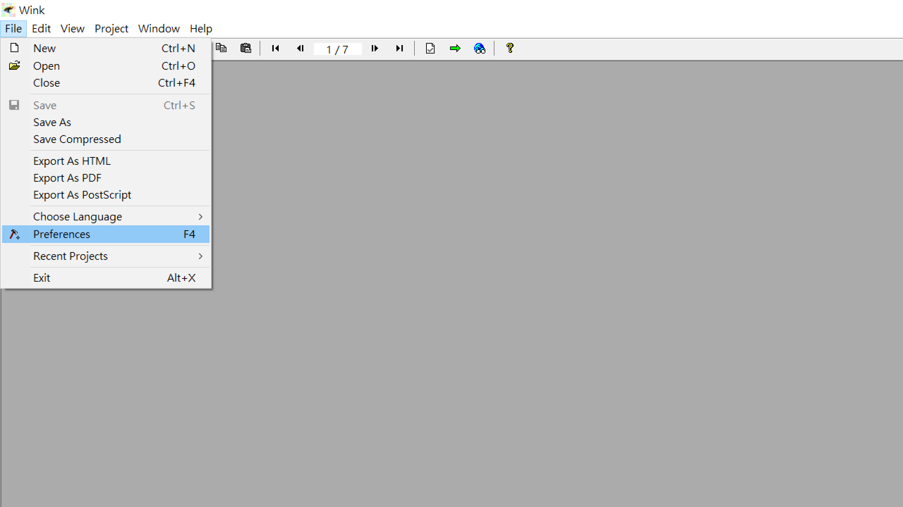
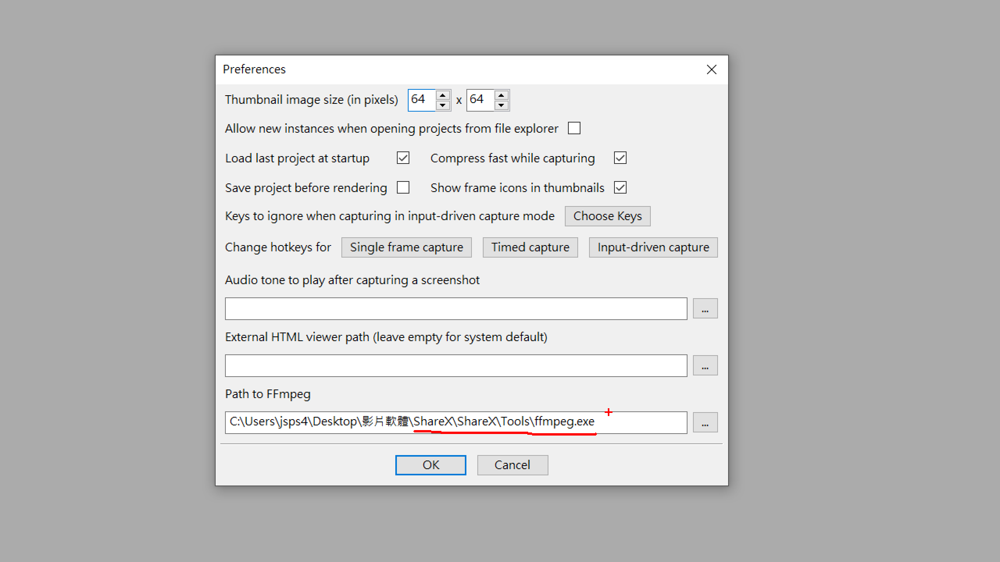
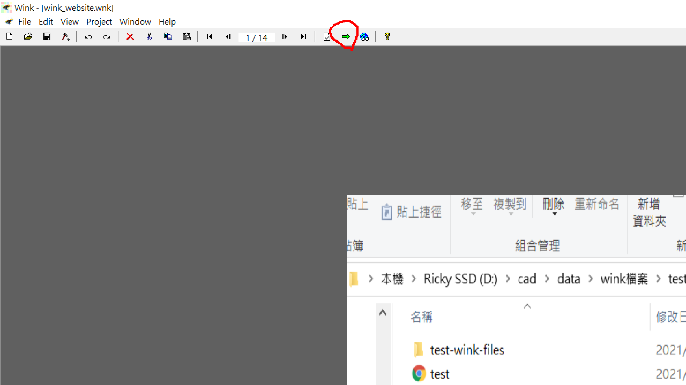
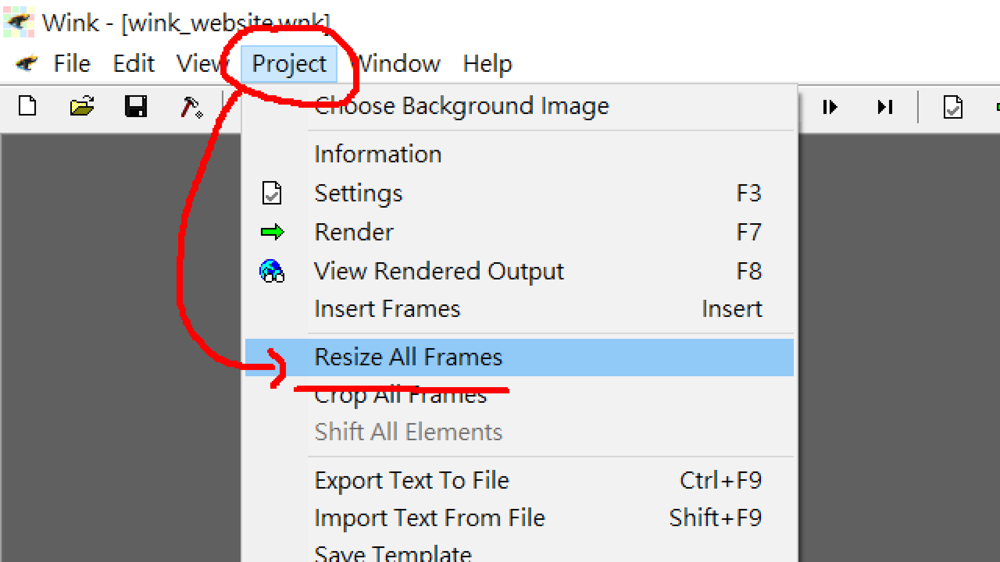
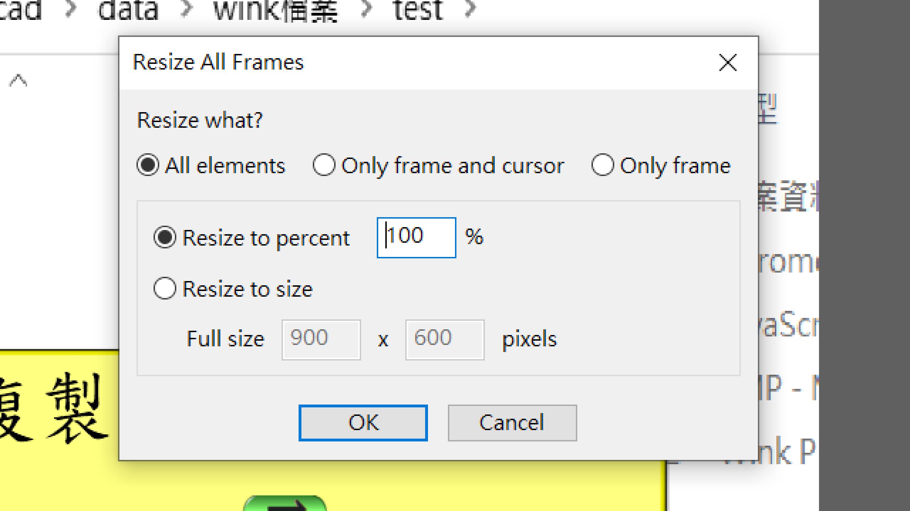

W1 建立倉儲 <<
Previous Next >> W11
W4 wink建立
關鍵字搜尋:
{下載wink流程}{建立新檔or打開舊檔}{開啟空白專案}{wink影片功能列表}
{鼠標編輯}{對話框編輯}{ffmpeg設定}{設定wink輸出大小}{wink加入網站步驟}
{wink按鈕功能&放兩部以上的wink}
按 control(按著不放) + F 即可輸入關鍵字
______________________________________
{下載wink流程}
wink動畫 按綠色箭頭上(下)一頁
______________________________________
{建立新檔or打開舊檔}
(1.)開啟空白專案
(2.)開啟舊檔

______________________________________
{開啟空白專案}
這裡是設定畫面大小

按左下角就可以開始擷取關鍵影格

在右下角找到向上指的箭頭(左鍵)
找到Wink(右鍵)
按Finish Capture

______________________________________
{wink影片功能列表}
(1)對話框
(2)上(下)一頁按鈕
(3)播放時間

______________________________________
{鼠標編輯}
圈起來的部分是鼠標動畫的起(結)點
左鍵點兩下可以編輯鼠標的圖案
左鍵按著即可拖動位子

______________________________________
{對話框編輯}
(1)更改對話框外觀
(2)更改字體樣式、大小、顏色

______________________________________
{ffmpeg設定}
要設定完才能把影片輸出
在左上角找到 File 點進去找到 Preferences

再來要把路徑指到 ShareX 裡的 ffmpeg

設定完成後再按這個，就可以輸出 mp4 的檔案(位置會在你儲存 wink 專案的地方)

______________________________________
{設定wink輸出大小}
在左上角找到 Peoject 左鍵
找到 Resize All Frames 左鍵

這裡可以用%數調整 (Resize to percent)
或是直接設定大小 (Resize to size)

______________________________________
{wink加入網站步驟}
wink動畫 按綠色箭頭上(下)一頁
______________________________________
{wink按鈕功能&放兩部以上的wink}
wink動畫 按綠色箭頭上(下)一頁
______________________________________
W1 建立倉儲 <<
Previous Next >> W11